Chapitre 2 Cartographie thématique
Nous ne détaillerons pas ici les règles de la cartographie thématique. Le lecteur pourra se référer à divers ouvrages de référence : Bertin (1967), Pumain and Béguin (2010), Lambert and Zanin (2016)
2.1 Le package cartography

Le package cartography (Giraud and Lambert 2018a) permet de créer et d’intégrer des cartes thématiques dans sa chaîne de traitements en R. Il permet des représentations cartographiques telles que les cartes de symboles proportionnels, des cartes choroplèthes, des typologies, des cartes de flux ou des cartes de discontinuités. Il offre également des fonctions qui permettent d’améliorer la réalisation de la carte, comme des palettes de couleur, des éléments d’habillage (échelle, flèche du nord, titre, légende…), d’y rattacher des labels ou d’accéder à des APIs cartographiques.
Pour utiliser ce package plusieurs sources peuvent être consultées :
- La documentation du package accessible sur internet ou directement dans R (
?cartography), - La vignette associée au package présente des exemples de scripts,
- Le blog R Géomatique qui met à disposition ressources et exemples liés au package et plus généralement à l’écosystème spatiale de R,
- La cheat sheet de cartography, qui résume les principales fonctions du package de façon synthétique.

Les fonctions de cartography dédiées à la représentation utilisent le suffixe Layer.
En général l’argument x est utilisé par un objet sf et l’argument var sert à renseigner la variable à représenter.
2.2 Représentations usuelles
2.2.1 Carte de symboles proportionnels
Les cartes de symboles proportionnels sont utilisées pour représenter les variables de stocks (variables quantitatives absolues, la somme et la moyenne ont un sens).
La fonction propSymbolsLayer() propose cette représentation, plusieurs symboles sont disponibles : cercles, carrés et barres.
library(cartography)
library(sf)
# Import des données
mtq <- st_read("data/mtq.gpkg", quiet = TRUE)
# Communes
plot(
st_geometry(mtq),
col = "lightblue4",
border = "lightblue3",
bg = "lightblue1"
)
# Symboles proportionnels
propSymbolsLayer(
x = mtq,
var = "POP",
legend.title.txt = "Population totale\n(2015)"
)
# Titre
title(main = "Population en Martinique")
2.2.2 Carte choroplèthe
Les cartes choroplèthes sont utilisées pour représenter les variables de ratios (variables quantitatives relatives, la moyenne a un sens, la somme n’a pas de sens).
Pour ce genre de représentation il faut au préalable :
- choisir une méthode de discrétisation pour transformer une série statistique continue en classes définies par des intervalles,
- choisir un nombre de classes,
- choisir une palette de couleurs.
La fonction choroLayer() permet de créer des cartes choroplètes . Les arguments nclass, method et breaks servent à paramétrer les discrétisations et la fonction getBreaks() permet de travailler sur les discrétisations en dehors de la fonction choroLayer(). De même, l’argument col est utilisé pour renseigner une palette de couleur mais plusieurs fonctions peuvent être utilisées pour paramétrer les palettes en dehors de la fonction (carto.pal()…).
# Densité de population (hab./km2) en utilisant la fonction sf::st_area()
mtq$POPDENS <- 1e6 * mtq$POP / as.numeric(st_area(mtq))
choroLayer(
x = mtq,
var = "POPDENS",
breaks = c(33, 75, 168, 377, 845, 1895),
col = c("#F1B1B4", "#E3898E", "#D35E63", "#BD2D33", "#7E1512"),
legend.title.txt = "Densité de population\n(habitants par km2)"
)
title(main = "Distribution de la population en Martinique (2015)")
2.2.2.1 Discrétisations
La fonction getBreaks() met à disposition les méthodes de discrétisations de variables classique : quantiles, moyenn/écart-type, amplitudes égales, moyennes emboitées, Fisher-Jenks, géométrique …
var <- mtq$POPDENS
moy <- mean(var)
med <- median(var)
std <- sd(var)
breaks <- getBreaks(v = var, nclass = 5, method = "quantile")
hist(var, probability = TRUE, breaks = breaks, main="quantiles",
col = carto.pal(pal1 = "wine.pal",3, "green.pal", 3))
rug(var)
abline(v = med, col = "blue", lwd = 3)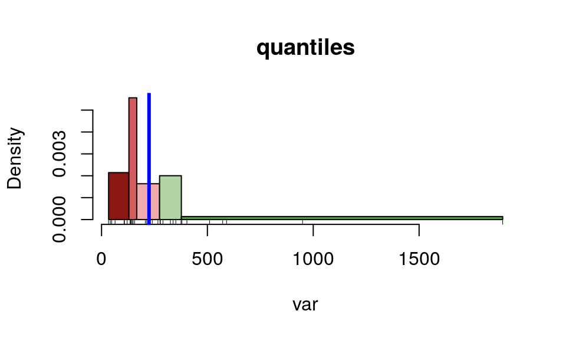
breaks <- getBreaks(v = var, nclass=5, method = "geom")
hist(var, probability = TRUE, breaks = breaks, main="progression géométrique",
col = carto.pal(pal1 = "wine.pal",6))
rug(var)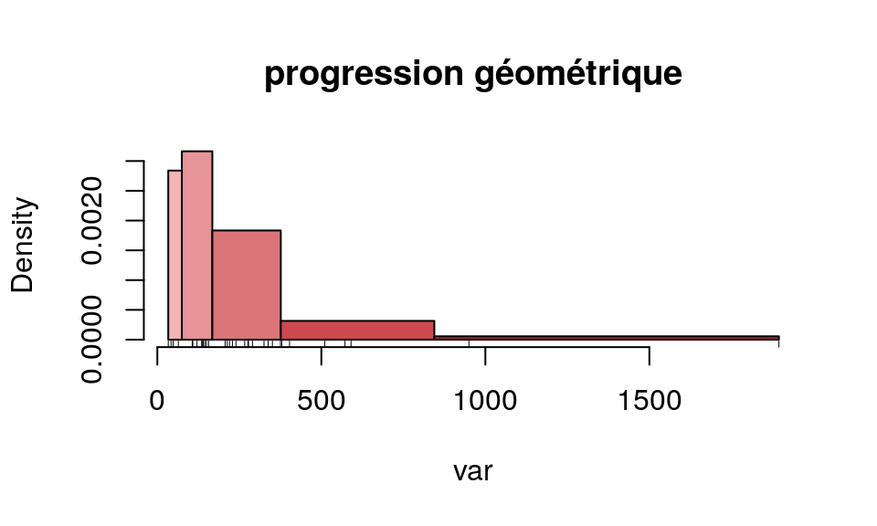
2.2.2.2 Palettes de couleurs
La fonction display.carto.all() permet d’afficher toutes palettes de couleurs disponibles dans cartography.
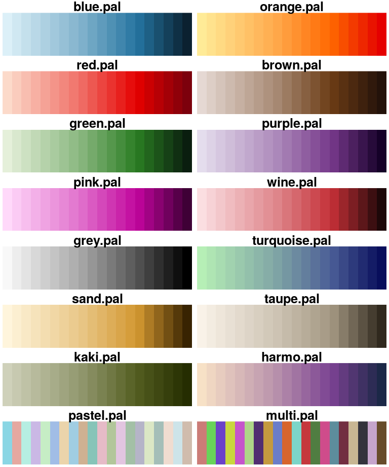
La fonction display.carto.pal() permet de détailler une palette de couleurs.

La fonction carto.pal() permet de construire une palette de couleur.
Il est possible de créer des palettes associant 2 couleurs.
mypal <- carto.pal(pal1 = "wine.pal", n1 = 5, pal2 = "green.pal", n2 = 4)
image(1:9, 1, as.matrix(1:9), col=mypal, xlab = "", ylab = "", xaxt = "n",
yaxt = "n",bty = "n")
2.2.3 Carte de typologie
Les cartes de typologies sont utilisées pour représenter les variables qualitatives.
La fonction typoLayer() propose cette représentation. L’argument legend.values.order sert à ordonner les modalités dans la légende.
typoLayer(
x = mtq,
var="STATUS",
col = c("aquamarine4", "yellow3","wheat"),
lwd = .7,
legend.values.order = c("Prefecture",
"Sub-prefecture",
"Simple municipality"),
legend.pos = "topright",
legend.title.txt = ""
)
title("Statut Administratif")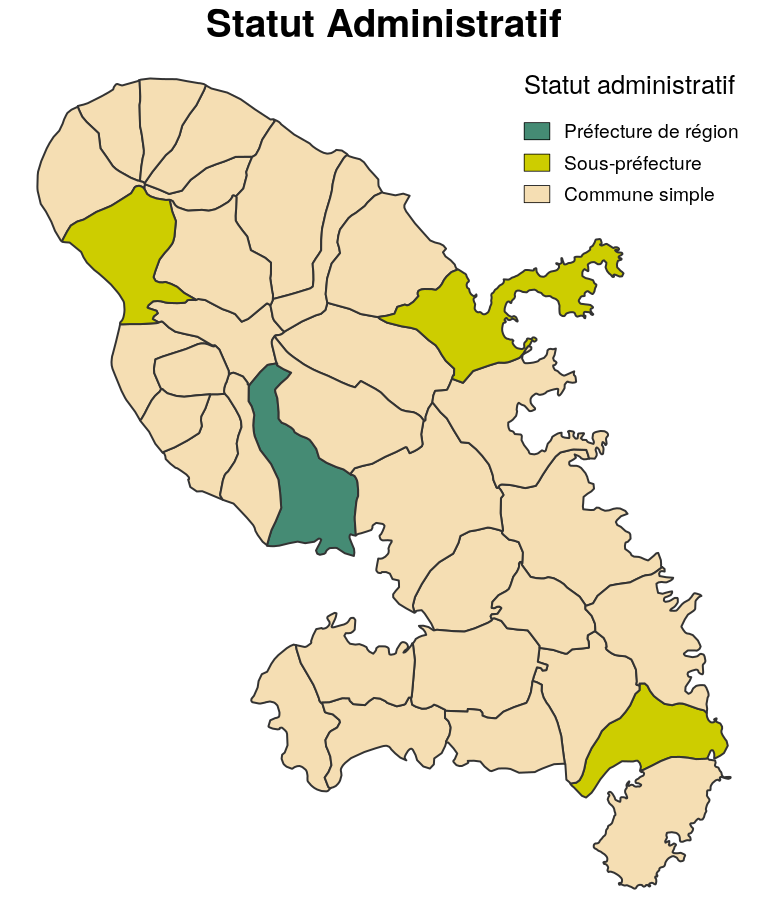
2.3 Combinaisons de représentations
Plusieurs fonctions sont dédiées à la représentation combinée de 2 variables.
2.3.1 Carte de stocks et de ratios
La fonction propSymbolsChoroLayer() représente des symboles proportionnels dont les surfaces sont proportionnelles aux valeurs d’une variable et dont la couleur repose sur la discrétisation d’une seconde variable. La fonction utilise les arguments des fonctions propSymbolsLayer() et choroLayer().
plot(
st_geometry(mtq),
col="darkseagreen3",
border="darkseagreen4",
bg = "lightblue1"
)
propSymbolsChoroLayer(
x = mtq,
var = "POP",
border = "grey50",
lwd = 1,
legend.var.pos = "topright",
legend.var.title.txt = "Population",
var2 = "MED",
method = "equal",
nclass = 4,
col = carto.pal(pal1 = "sand.pal", n1 = 4),
legend.var2.values.rnd = -2,
legend.var2.pos = "left",
legend.var2.title.txt = "Revenu\nmédian\n(en euros)"
)
title("Population et richesse en Martinique, 2015")
2.3.2 Carte de stocks et de qualitative
La fonction propSymbolsTypoLayer() représente des symboles proportionnels dont les surfaces sont proportionnelles aux valeurs d’une variable et dont la couleur représente les modalités d’une variable qualitative. La fonction utilise les arguments des fonctions propSymbolsLayer() et typoLayer().
plot(
st_geometry(mtq),
col="darkseagreen3",
border="darkseagreen4",
bg = "lightblue1"
)
propSymbolsTypoLayer(
x = mtq,
var = "POP",
symbols = "circle",
var2 = "STATUS",
col = c("aquamarine4", "yellow3","wheat"),
legend.var.pos = "bottomleft",
legend.var.title.txt = "Population\n(2015)",
legend.var2.title.txt = "Statut administratif",
legend.var2.values.order = c("Prefecture",
"Sub-prefecture",
"Simple municipality")
)
title("Population en Martinique")
2.4 Mise en page
Pour être finalisée, une carte thématique doit contenir certains éléments aditionnels tels que : le titre, l’auteur, la source, l’échelle, l’orientation…
2.4.1 Habillage complet
La fonction layoutLayer() permet d’afficher tous ces éléments.
plot(st_geometry(mtq), col = "lightblue4", border = "lightblue3",
bg = "lightblue1")
layoutLayer(
title = "Martinique",
sources = "IGN",
author = "Giraud & Pécout, 2019",
north = TRUE
)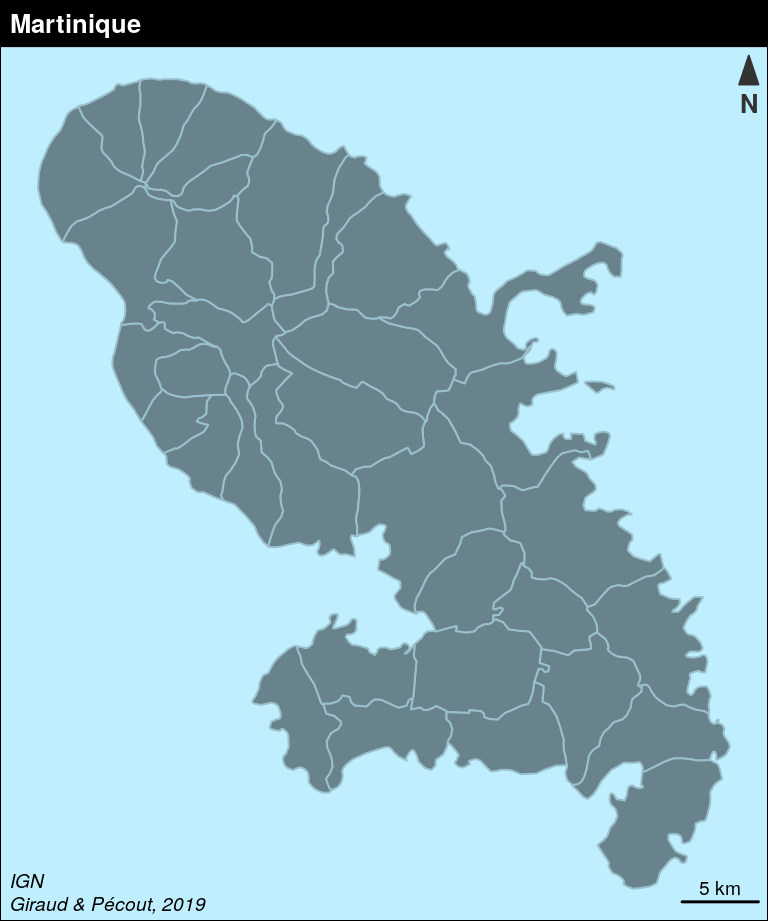
Plusieurs arguments permettent de paramétrer plus finement les éléments d’habillage pour aboutir à des cartes plus personnalisées (tabtitle, col, coltitle, theme…).
plot(st_geometry(mtq), col = "lightblue4", border = "lightblue3",
bg = "lightblue1")
layoutLayer(
title = "Martinique",
sources = "IGN",
author = "Giraud & Pécout, 2019",
north = TRUE,
scale = 5,
frame = FALSE,
tabtitle = TRUE,
theme = "turquoise.pal"
)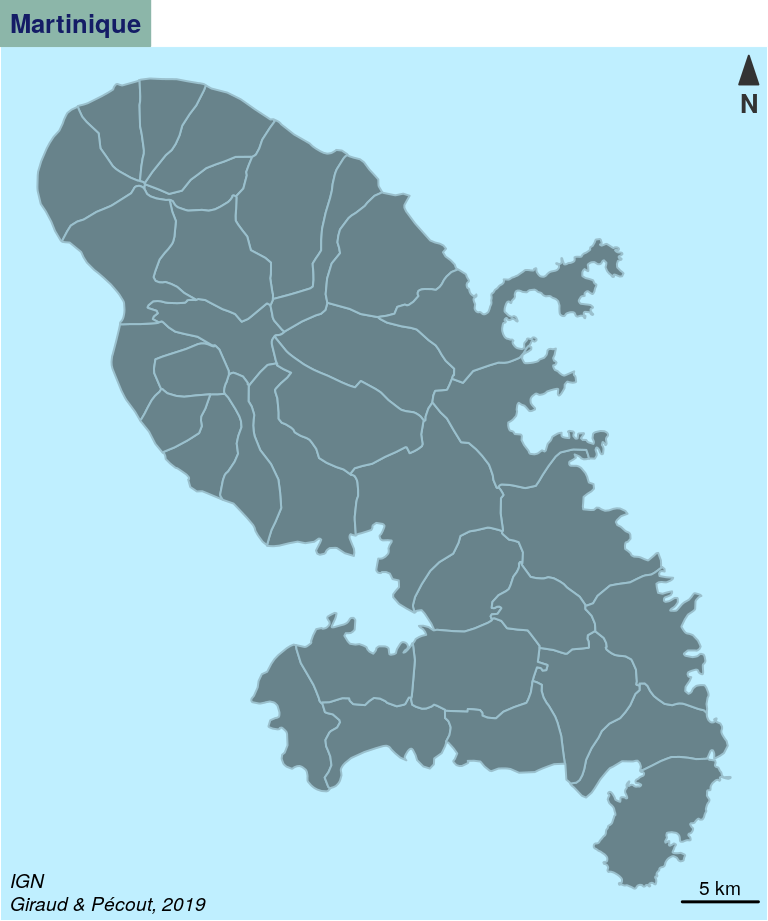
2.4.2 Flèche d’orientation
La fonction north() permet de mieux choisir la position et l’aspect de la flêche d’orientation.
plot(st_geometry(mtq), col = "#D1914D", border = "white")
north(pos = "topleft", col = "#D1914D")
layoutLayer(title = "Martinique", sources = "IGN",
author = "Giraud & Pécout, 2019", frame = FALSE, scale = 5,
coltitle = "#D1914D",tabtitle = TRUE, postitle = "right")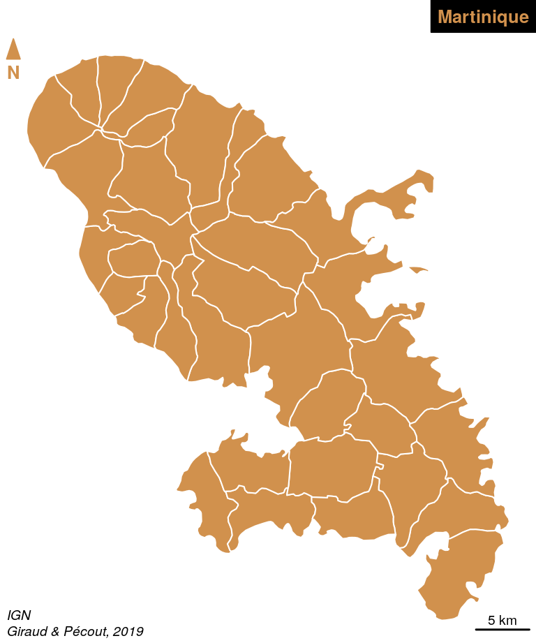
2.4.3 Échelle
La fonction barscale() permet de mieux choisir la position et l’aspect de l’échelle.
plot(st_geometry(mtq), col = "#D1914D", border = "white")
barscale(
size = 5,
lwd = 2,
cex = 1.2,
pos = c(713712.6,1594777)
)
layoutLayer(title = "Martinique", sources = "IGN",
author = "Giraud & Pécout, 2019", scale = NULL,
coltitle = "#D1914D",tabtitle = TRUE)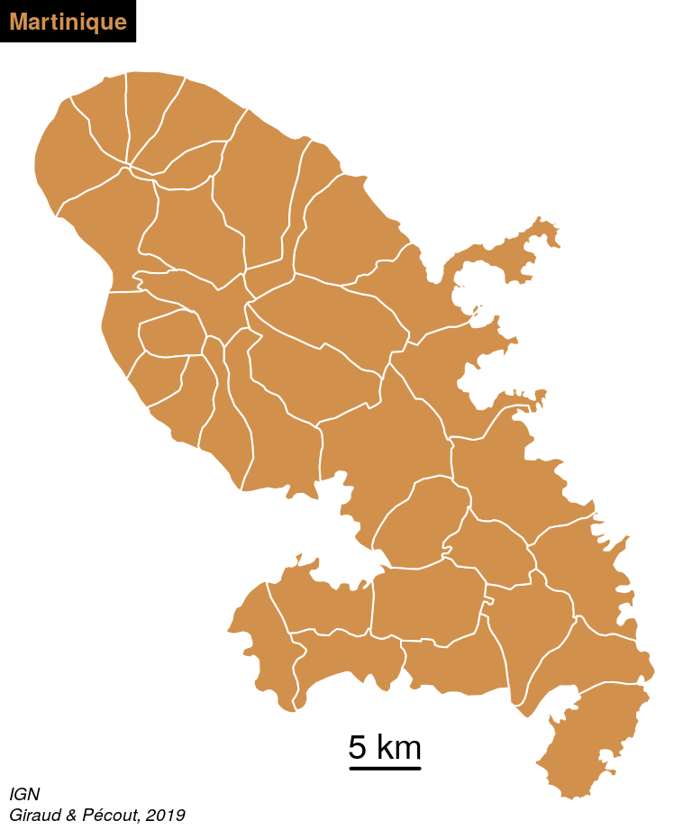
2.4.4 Étiquettes
La fonction labelLayer() est dédiée à l’afichage d’étiquettes.
plot(st_geometry(mtq), col = "darkseagreen3", border = "darkseagreen4",
bg = "#A6CAE0")
labelLayer(
x = mtq,
txt = "LIBGEO",
col= "black",
cex = 0.7,
font = 4,
halo = TRUE,
bg = "white",
r = 0.1,
overlap = FALSE,
show.lines = FALSE
)
layoutLayer(title = "Communes", tabtitle = TRUE, author = "INSEE, 2016",
sources ="", north =TRUE, frame = FALSE, scale = 5)
2.4.5 Ajuster les marges d’une figure
Pour modifier les marges d’une figure (carte ou autre) il faut utiliser la fonction par() qui défini certains paramètres graphiques des figures et son argument mar.
La fonction dev.off() efface tous les graphiques en mémoire et permet de réinitialiser les valeurs par défaut.
# Modification de la couleur de fond des graphique
par(bg="grey90")
plot(st_geometry(mtq), main="Marges par défaut")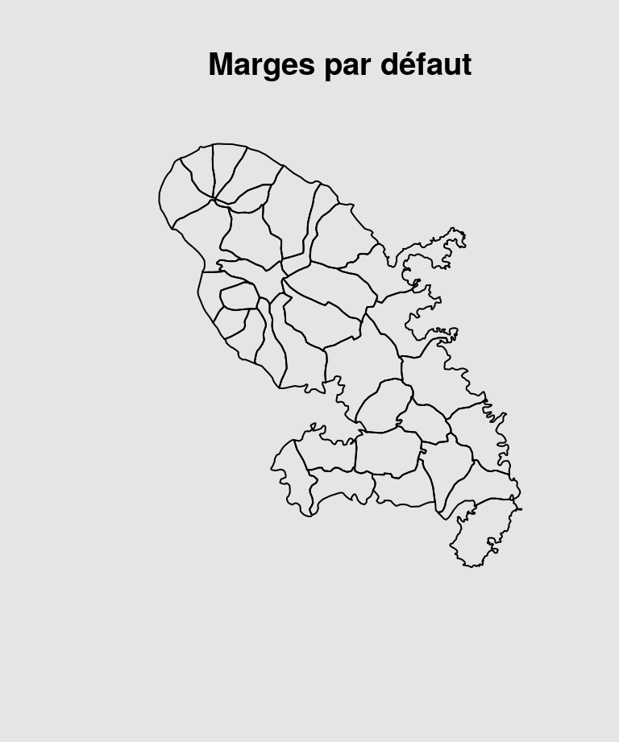
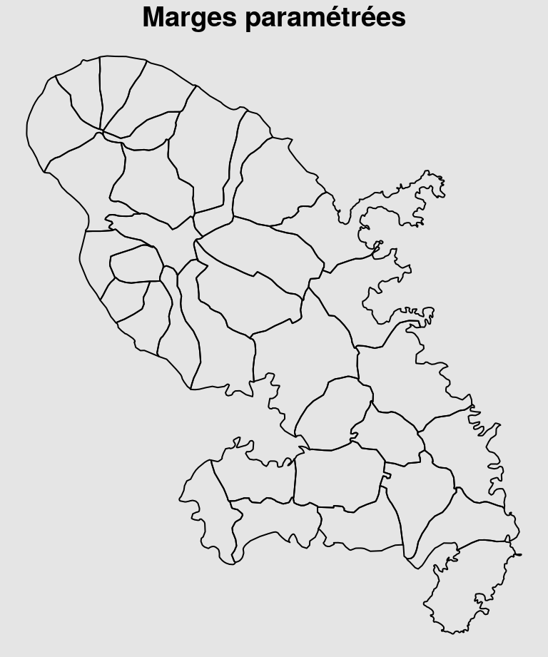
2.4.6 Centrer la carte sur une région
Plusieurs solutions sont possible :
- Afficher une couche de la zone de zoom sans couleur pour le fond et les bordures puis afficher les couches que l’on souhaite afficher.
carbet <- mtq[mtq$LIBGEO=="Le Carbet",]
# affichage de la couche de zoom "invisible"
plot(
st_geometry(carbet),
col = NA,
border = NA,
bg = "#A6CAE0"
)
# affichage des communes
plot(
st_geometry(mtq),
col = "darkseagreen1",
border = "darkseagreen4",
add=TRUE
)
# affichage de la couche d'intérêt
plot(
st_geometry(carbet),
col = "darkseagreen3",
border = "darkseagreen4",
lwd = 2,
add=TRUE
)
layoutLayer(
title = "Le Carbet",
sources = "",
author = "",
scale = 1,
tabtitle = TRUE,
frame=FALSE
)
- Utiliser les paramètres
xlimetylimde la fonctionplot()aves les valeurs fournies par la fonctionst_bbox()
diams <- mtq[mtq$LIBGEO=="Le Diamant",]
diams_bb <- st_bbox(diams)
# affichage des communes
plot(
st_geometry(mtq),
col = "darkseagreen1",
border = "darkseagreen4",
xlim = diams_bb[c(1,3)],
ylim = diams_bb[c(2,4)],
bg = "#A6CAE0"
)
# affichage de la couche d'intérêt
plot(
st_geometry(diams),
col = "darkseagreen3",
border = "darkseagreen4",
lwd = 2,
add=TRUE
)
layoutLayer(
title = "Le Diamant",
sources = "",
author = "",
scale = 1,
tabtitle = TRUE,
frame=FALSE
)2.4.7 Afficher plusieurs cartes sur la même figure
Il faut ici utiliser l’argument mfrow de la fonction par(). Le premier chiffre représente le nombre lignes et le deuxième le nombre de colonnes.
# deux lignes et deux colonnes
par(mfrow=c(2,2))
plot(st_geometry(mtq), col="red")
plot(st_geometry(mtq), col="blue")
plot(st_geometry(mtq), col="green")
plot(st_geometry(mtq), col="yellow")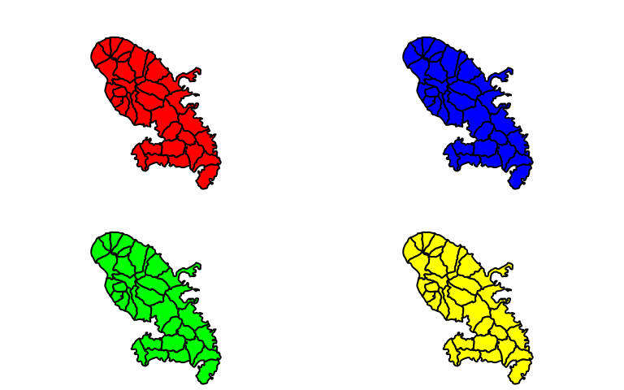
# une ligne et deux colonnes
par(mfrow=c(1,2), mar = c(0,.2,1.2,.2))
# 1ere carte
carbet_bb <- st_bbox(carbet)
plot(st_geometry(mtq), col = "darkseagreen1", border = "darkseagreen4",
xlim = carbet_bb[c(1,3)], ylim = carbet_bb[c(2,4)], bg = "#A6CAE0")
plot(st_geometry(carbet), col = "darkseagreen3", border = "darkseagreen4",
lwd = 2, add=TRUE)
layoutLayer(title = "Le Carbet", sources = "", author = "", scale = 1,
tabtitle = TRUE, frame=FALSE)
# 2eme carte
plot(st_geometry(mtq), col = "darkseagreen1", border = "darkseagreen4",
xlim = diams_bb[c(1,3)], ylim = diams_bb[c(2,4)], bg = "#A6CAE0")
plot(st_geometry(diams), col = "darkseagreen3", border = "darkseagreen4",
lwd = 2, add=TRUE)
layoutLayer(title = "Le Diamant", sources = "", author = "", scale = 1,
tabtitle = TRUE, frame=FALSE)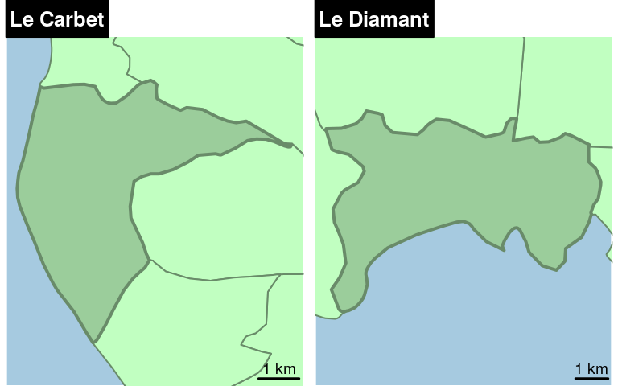
# une ligne et deux colonnes
par(mfrow=c(2,1), mar = c(0.2,0,1.4,0))
# 1ere carte
carbet_bb <- st_bbox(carbet)
plot(st_geometry(mtq), col = "darkseagreen1", border = "darkseagreen4",
xlim = carbet_bb[c(1,3)], ylim = carbet_bb[c(2,4)], bg = "#A6CAE0")
plot(st_geometry(carbet), col = "darkseagreen3", border = "darkseagreen4",
lwd = 2, add=TRUE)
layoutLayer(title = "Le Carbet", sources = "", author = "", scale = 1,
tabtitle = TRUE, frame=FALSE)
# 2eme carte
plot(st_geometry(mtq), col = "darkseagreen1", border = "darkseagreen4",
xlim = diams_bb[c(1,3)], ylim = diams_bb[c(2,4)], bg = "#A6CAE0")
plot(st_geometry(diams), col = "darkseagreen3", border = "darkseagreen4",
lwd = 2, add=TRUE)
layoutLayer(title = "Le Diamant", sources = "", author = "", scale = 1,
tabtitle = TRUE, frame=FALSE)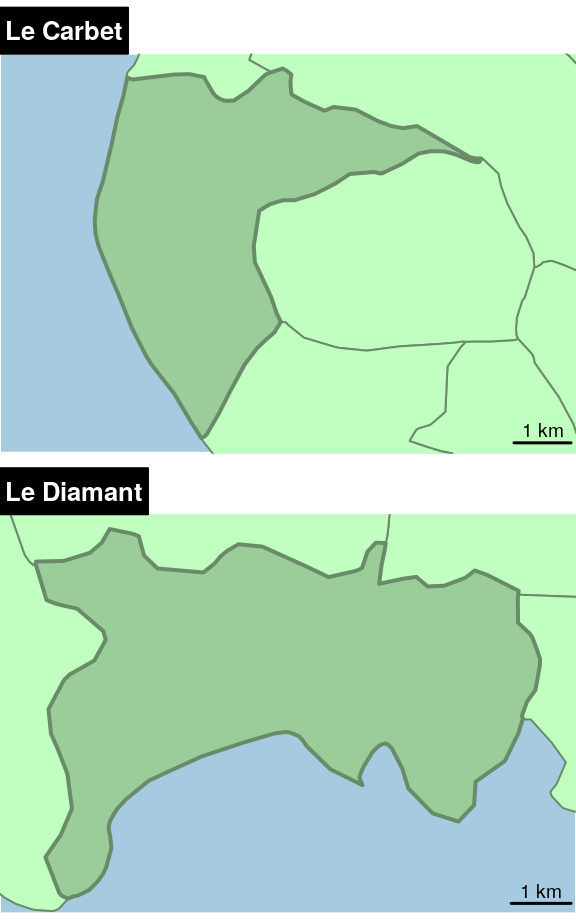
2.4.8 Obtenir un ratio de figure adapté
Il est assez difficile d’exporter des figures (cartes ou autres) dont le ratio hauteur/largeur soit satisfaisant. Le ratio par défaut des figure au format png est de 1 (480x480 pixels) :
png(filename = "img/martinique1.png", res = 96)
par(mar = c(0,0,1.2,0), bg = "grey90")
plot(st_geometry(mtq), bg = "#A6CAE0", col = "#D1914D", border = "white")
layoutLayer(title = "Martinique", sources = "", author = "", scale = NULL)
dev.off()
Sur cette carte beaucoup d’espace est perdu à l’est et à l’ouest de l’ile.
La fonction getFigDim() de cartography permet de choisir un ratio hauteur/largeur correspondant à l’emprise d’un objet sf en prenant en compte une largeur (ou hauteur) fixée, les paramètres de marges et la résolution souhaitée.
[1] 480 585png(filename = "img/martinique2.png", width = 480, height = 583, res = 96)
par(mar = c(0,0,1.2,0), bg = "grey90")
plot(st_geometry(mtq), bg = "#A6CAE0", col = "#D1914D", border = "white")
layoutLayer(title = "Martinique", sources = "", author = "", scale = NULL)
dev.off()
L’emprise de cette carte est exactement celle de l’île.
2.4.9 Ajouter une image sur une carte
Cela peut être utile pour ajouter un logo un pictogramme. La fonction readPNG() du package png permet l’ajout d’images sur une figure.
library(png)
# import de l'image
logo <- readPNG("img/mapmonster.png")
# dimension de l'image en unité de la carte
pp <- dim(logo)[2:1] * 16
# Définition d'un point d'encrage de l'image dans la figure, ici
# le coin inférieur gauche de la bounding box de la martique.
xy <- st_bbox(mtq)[1:2]
par(mar = c(0,0,1.2,0))
plot(st_geometry(mtq), bg = "#A6CAE0", col = "#D1914D", border = "white")
rasterImage(
image = logo,
xleft = xy[1],
ybottom = xy[2],
xright = xy[1] + pp[1],
ytop = xy[2] + pp[2]
)
layoutLayer(title = "Martinique", tabtitle = TRUE, frame = FALSE,
sources = "", author = "", scale = NULL)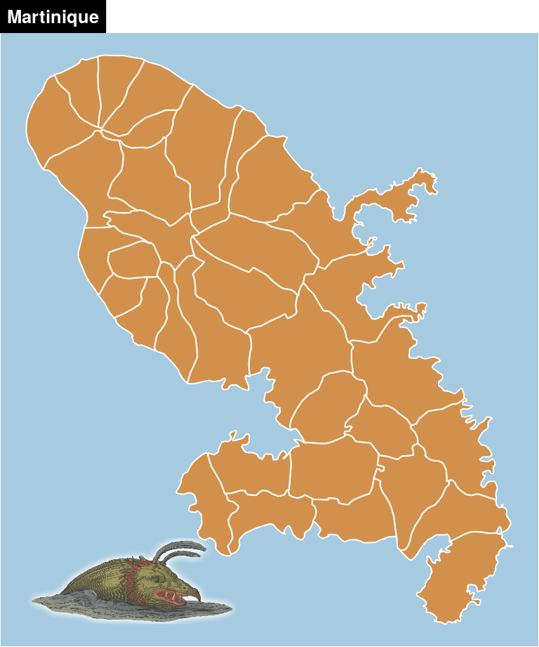
2.4.10 Placer précisément un élément sur la carte
La fonction locator() permet de cliquer sur une figure et d’obtenir les coordonnées d’un point dans le système de coordonnées de la figure (de la carte).
plot(st_geometry(mtq), col = "darkseagreen3", border = "darkseagreen4",
bg = "#A6CAE0")
text(x = 694019, y = 1615161,
labels = "MER\nDES\nCARAÏBES",
col = "#e3f1f9", font = 3, srt=20)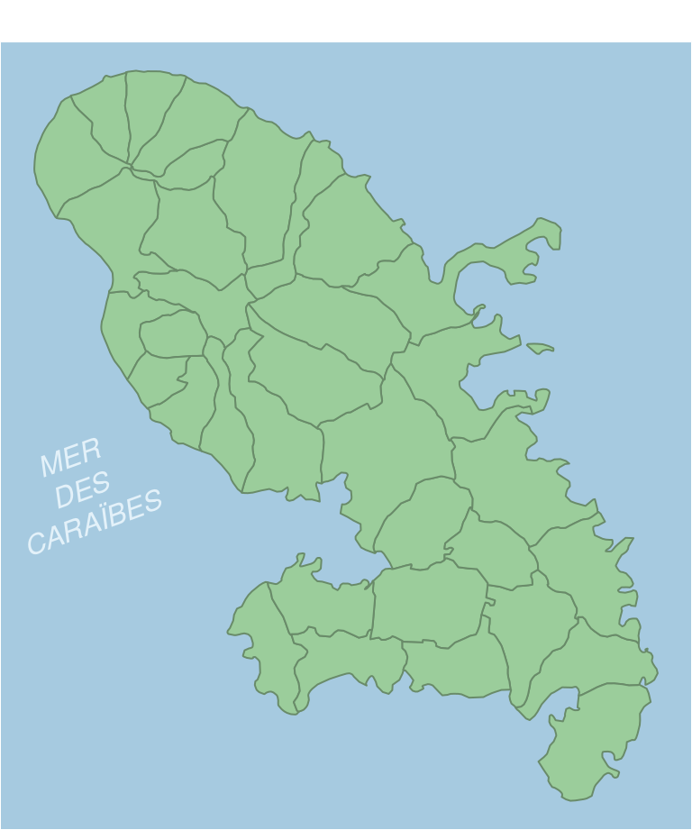
locator()peut être utilisée sur la plupart des graphiques (pas ceux produits avec ggplot2).
2.4.11 Utiliser un fond de carte OSM
La fonction getTiles() permet de télécharger des fonds de cartes OSM et la fonction tilesLayer() permet de les afficher.
type <- c( "osm", "hotstyle", "hikebike", "osmgrayscale", "stamenbw",
"stamenwatercolor", "cartodark", "cartolight", "opentopomap")
par(mar = c(0,0,0,0), mfrow = c(3,3))
for (i in type){
tilesLayer(getTiles(x = mtq, type = i, crop=TRUE))
mtext(side = 3, line = -1.5, text = i, col="red")
}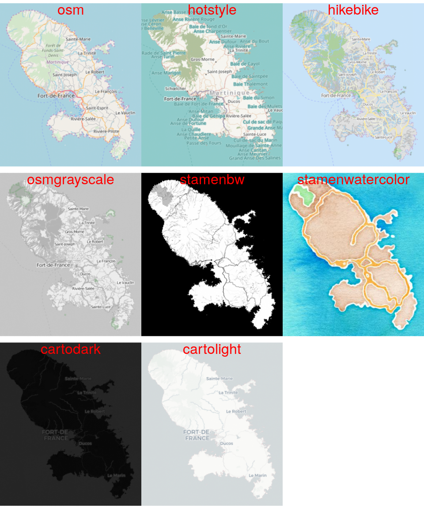
2.4.12 Créer un effet crayonné
library(sf)
mtq_pencil <- getPencilLayer(x = mtq)
typoLayer(
x = mtq_pencil,
var="STATUS",
col = c("aquamarine4", "yellow3","wheat"),
lwd = .7,
legend.values.order = c("Prefecture",
"Sub-prefecture",
"Simple municipality"),
legend.pos = "topright",
legend.title.txt = ""
)
plot(st_geometry(mtq), add = TRUE, ldy=2)
layoutLayer(title = "Statut Administratif",tabtitle=TRUE,
author= "INSEE, 2016", sources="",
frame=FALSE, scale = 5)
north(pos = "topleft")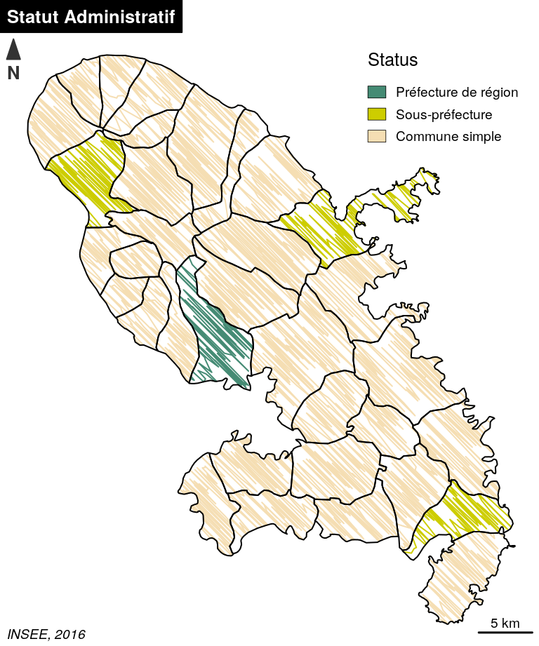
2.4.13 Ajouter un ombrage à une couche
plot(st_geometry(mtq) + c(500, -500),
col = "grey50", border = NA, bg = "lightblue1")
plot(st_geometry(mtq), col="darkseagreen3", border="darkseagreen4", add=TRUE)
layoutLayer(title = "Communes",tabtitle=TRUE,
author= "INSEE, 2016", sources="", north=TRUE,
frame=FALSE, scale = 5)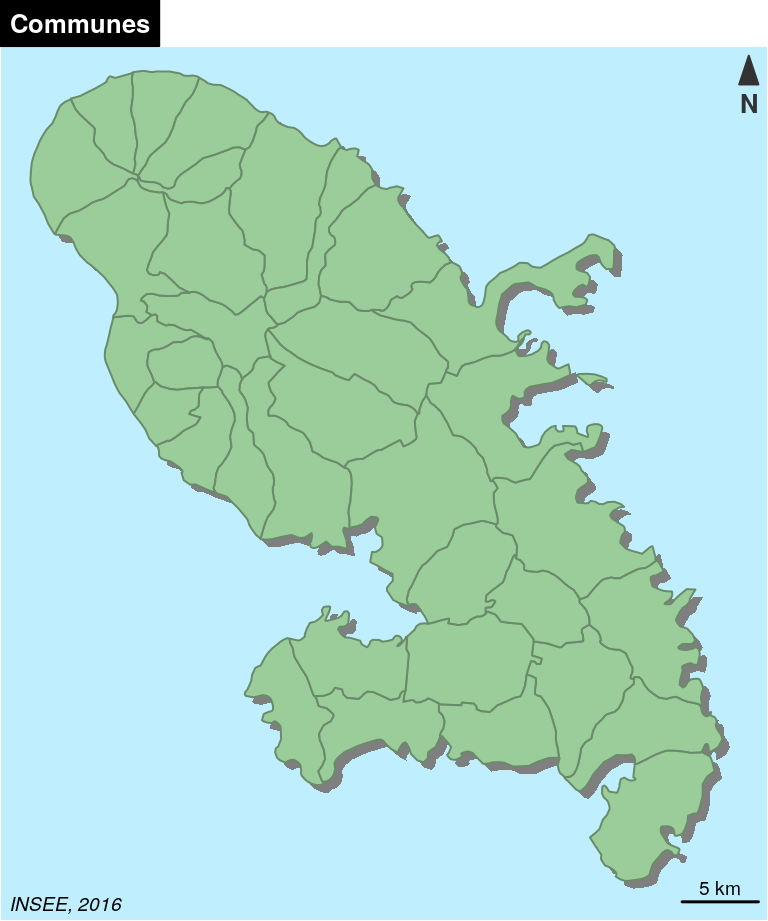
2.4.14 Création de cartons
Le package mapinsetr(Giraud and Lambert 2018b) est dédié à la crétion de cartons cartographiques. Il n’est pas sur le CRAN pour l’instant, mais on peut l’installer via le package remotes.
mapinsetr permet de découper, redimensionner et déplacer une zone d’un fond de carte.
library(mapinsetr)
library(cartography)
library(sf)
mtq <- st_read("data/mtq.gpkg", quiet = TRUE)
resto <- st_read("data/resto.gpkg", quiet = TRUE)
# Création d'un masque
box_FDF <- create_mask(bb = c(706880, 1615030, 708650, 1616870),
prj = st_crs(mtq))
# Découpage, déplacement et redimentionnement des couches sous le masque
zbox_FDF <- move_and_resize(
x = box_FDF,
mask = box_FDF,
xy = c(689000, 1603000),
k = 7
)
zmtq_FDF <- move_and_resize(
x = mtq,
mask = box_FDF,
xy = c(689000, 1603000),
k = 7
)
zresto_FDF <- move_and_resize(
x = resto,
mask = box_FDF,
xy = c(689000, 1603000),
k = 7
)
# Affichage de la carte et des couhes crées
plot(st_geometry(mtq), col = "lightblue4", border = "lightblue3",
bg = "lightblue1")
plot(st_geometry(resto), add=T, pch=20, col = "#330A5FFF", cex = 0.5)
plot(st_geometry(box_FDF), border = "red", add = T, lwd = 2)
plot(st_geometry(zmtq_FDF), col = "lightblue4", border = "lightblue3", add=TRUE)
plot(st_geometry(zresto_FDF), add=TRUE, pch=20, col = "#330A5FFF", cex = 0.5)
plot(st_geometry(zbox_FDF), border = "red", add = T, lwd = 2)
layoutLayer(title = "Carte initiale + couches créées",tabtitle=TRUE,
author= "INSEE, 2016", sources="", north=TRUE,
frame=FALSE, scale = 5)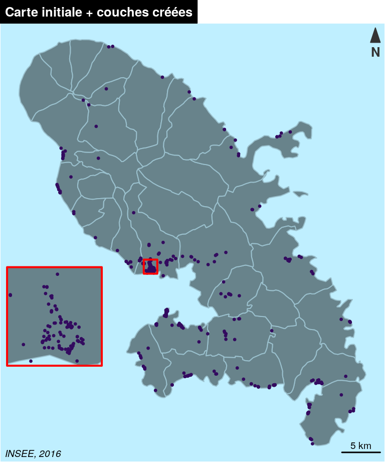
# Création de couches unqiues comprenant le zoom
resto <- inset_rbinder(l = list(resto, zresto_FDF))
mtq <- inset_rbinder(l = list(mtq, zmtq_FDF))
box <- inset_rbinder(l = list(box_FDF, zbox_FDF))
plot(st_geometry(mtq), col = "lightblue4", border = "lightblue3",
bg = "lightblue1")
plot(st_geometry(resto), add=T, pch=20, col = "#330A5FFF", cex = 0.5)
plot(st_geometry(box), border = "red", add = T, lwd = 2)
layoutLayer(title = "Carte finale avec carton",tabtitle=TRUE,
author= "INSEE, 2016", sources="", north=TRUE,
frame=FALSE, scale = 5)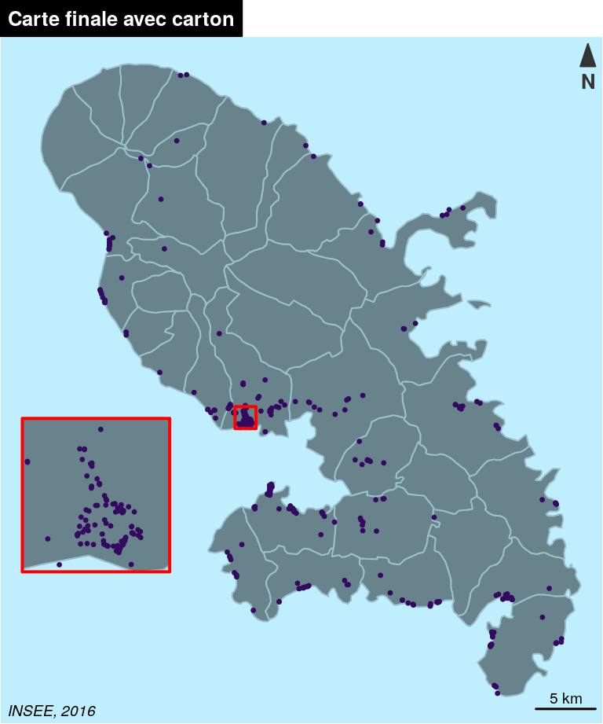
References
Bertin, Jacques. 1967. “Sémiologie Graphique: Les Diagrammes, Les Réseaux, Les Cartes, Les Réimpressions Des Éditions de L’Ecole Des Hautes Études En Sciences Sociales.” Paris: Mouton & Gauthier-Villars.
Giraud, Timothée, and Nicolas Lambert. 2018a. Cartography: Thematic Cartography. https://github.com/riatelab/cartography/.
Giraud, Timothée, and Nicolas Lambert. 2018b. Mapinsetr: Create Map Insets. https://github.com/riatelab/mapinsetr/.
Lambert, Nicolas, and Christine Zanin. 2016. Manuel de Cartographie: Principes, Méthodes, Applications. Armand Colin.
Pumain, Denise, and Michèle Béguin. 2010. La Représentation Des Données Géographiques: Statistique et Cartographie. Armand Colin.